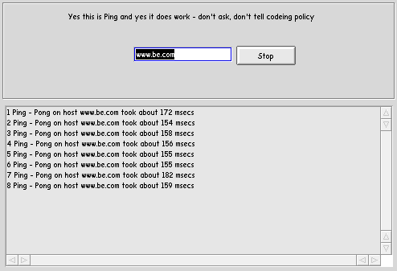

Its ping. It just sends a packet to a host and sees if its alive. It the host is alive then it lets you know how long it took to ping that host. This is one of the most basic net tools, and also one of the hardest to impliment :P
Here is the results of a ping on be.com

Back to PortSpy docs
PortSpy is copyright YNOP Talton 1999,2000

 Its ping. It just sends a packet to a host and sees if its alive. It the host is alive then it lets you know how long it took to ping that host. This is one of the most basic net tools, and also one of the hardest to impliment :P
Its ping. It just sends a packet to a host and sees if its alive. It the host is alive then it lets you know how long it took to ping that host. This is one of the most basic net tools, and also one of the hardest to impliment :P